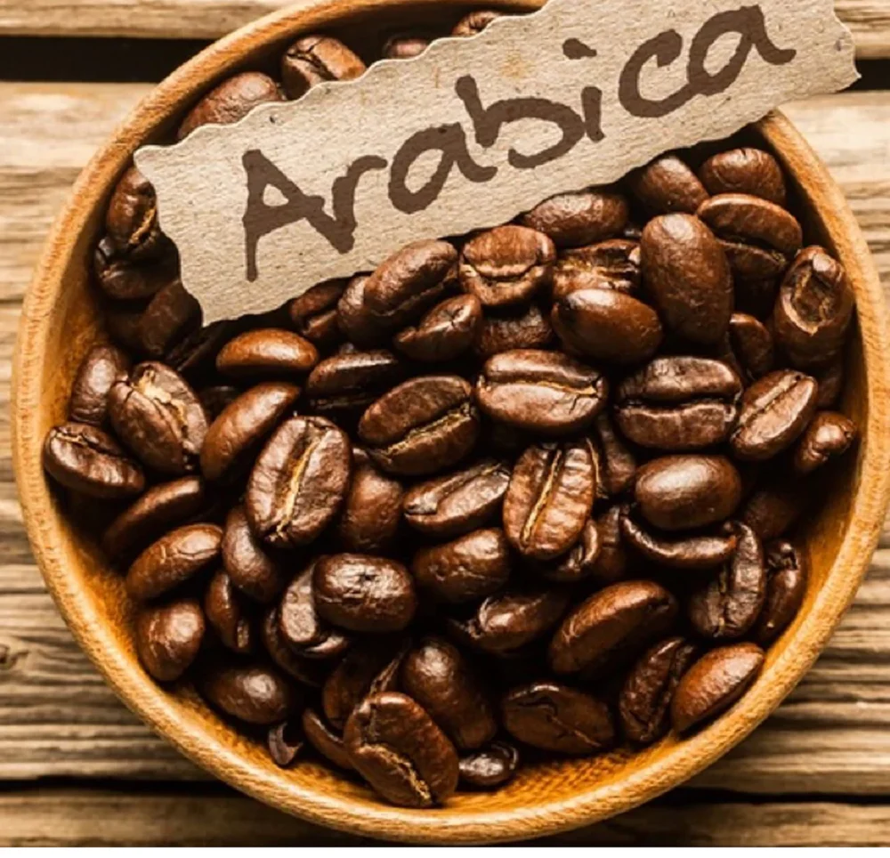
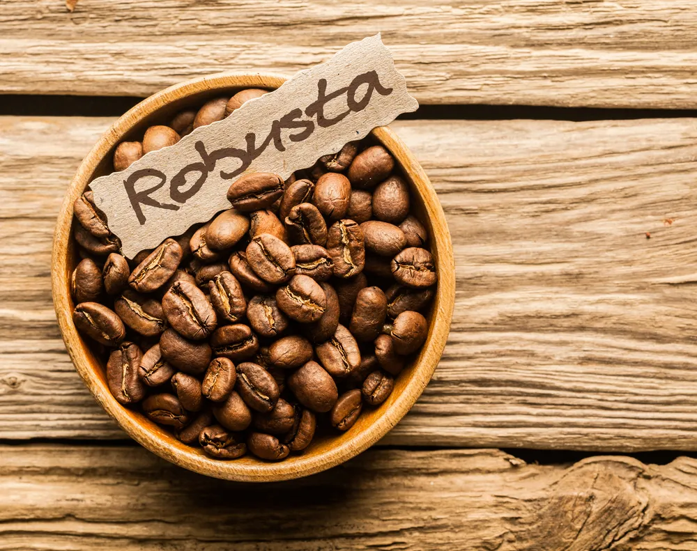

Az arabica a világ legelterjedtebb kávéfajtája: a teljes termelés kb. 60–70%-át adja. Őshazája Etiópia hegyvidéke, ma főleg Latin-Amerikában termesztik, legnagyobb termelője Brazília. Magasabb, 600–2000 méteres tengerszint feletti magasságon érzi jól magát, és érzékenyebb a kártevőkre és az időjárásra, ezért drágább. A szemek hosszúkásak, ovális alakúak, a közepükön hullámos barázdával. Íze lágy, enyhén savas és összetett: gyümölcsös, virágos, csokoládés és karamellás jegyek is megjelenhetnek benne. Koffeintartalma alacsonyabb, kb. 1,2–1,5%.

A robusta a világ kávétermelésének nagyjából 30–40%-át adja. Nyugat- és Közép-Afrikából származik, ma a legnagyobb termelője Vietnám. Ahogy a neve is mutatja, ellenálló növény: alacsonyabban (0–800 m) is megterem, jobban bírja a meleget és a betegségeket, és több termést hoz, ezért olcsóbb. A szemek kisebbek, kerekebbek, a barázda egyenesebb. Íze erőteljes, kesernyés, földes és mogyorós. Koffeintartalma körülbelül a duplája az arabicáénak (kb. 2,2–2,7%). Sűrű, tartós krémát ad, ezért gyakran kerül olasz espresso-keverékekbe és instant kávéba.